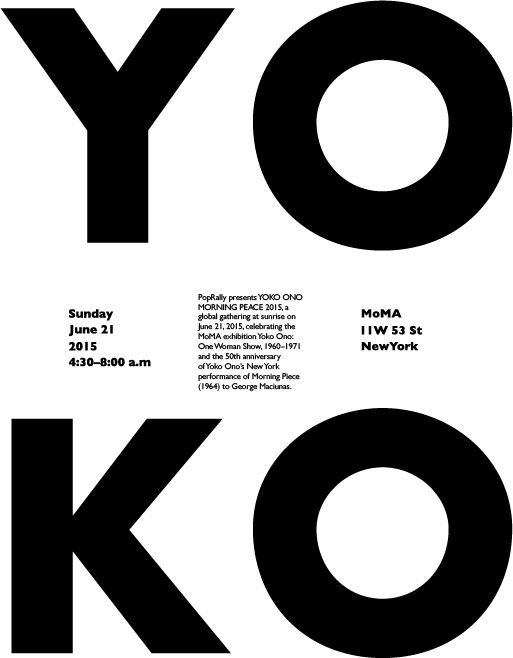
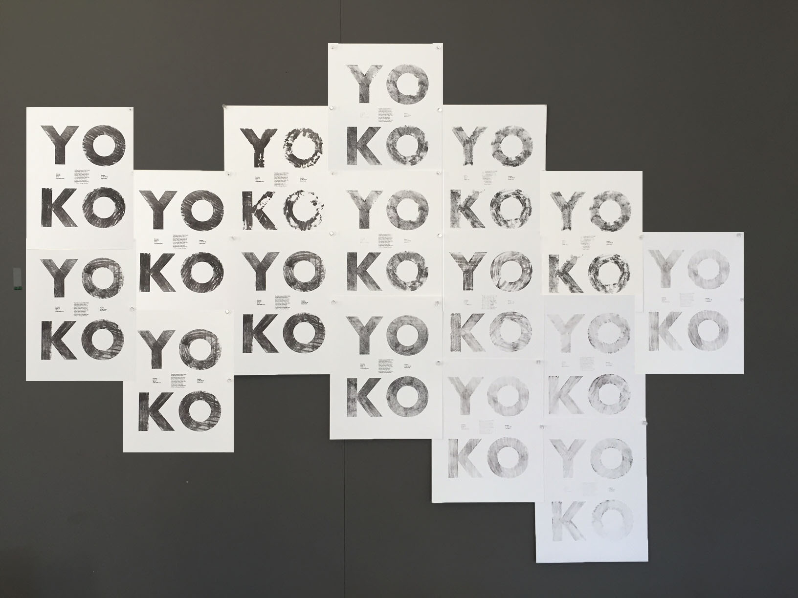
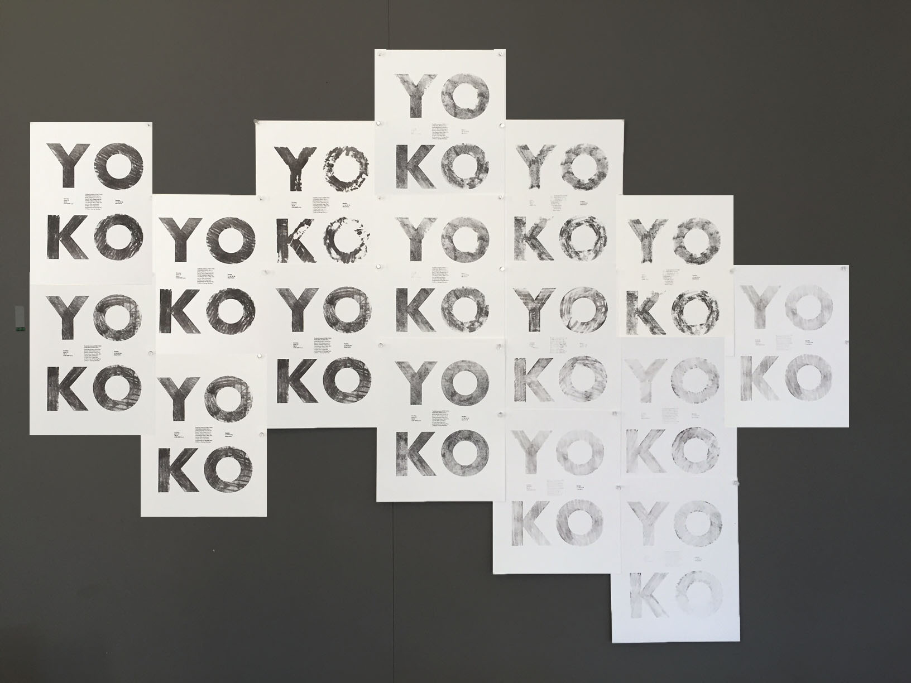

JUN
YOKO ONO poster is based on the real event hosted in MOMA in June 21,
2015, using ink transform to discover the connection between performing art
and poster design.
The procss of transforming single printed poster to numbers pages until the ink runs out is the part of the performaning prodeuction.

 
